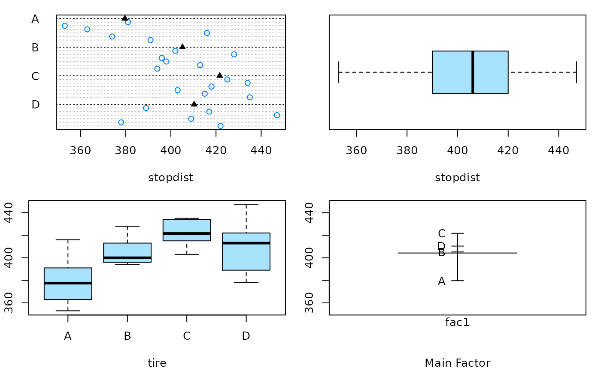
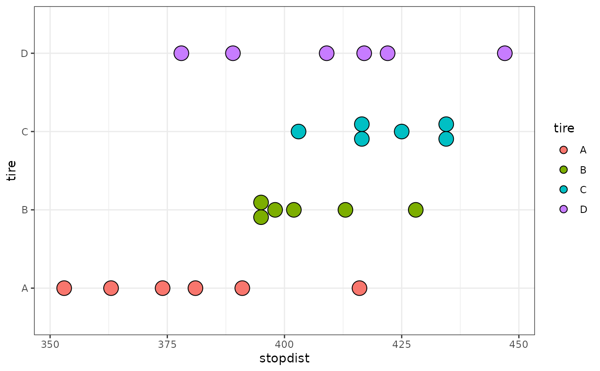
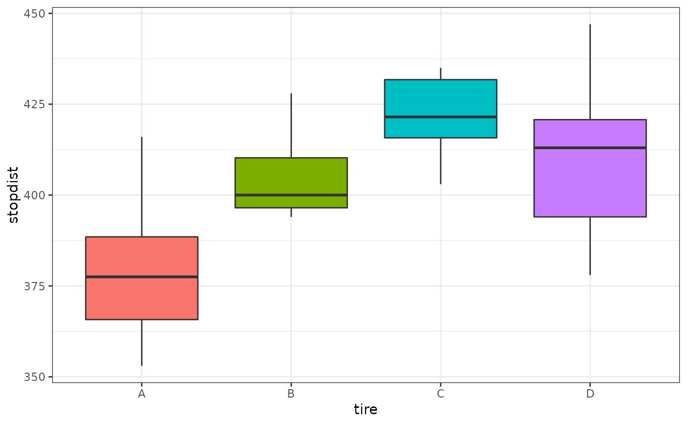

Function to create dotplots, boxplots, and design plot (means) for single factor designs
oneway.plots(Y, fac1, COL = c("#A9E2FF", "#0080FF"))response variable for a single factor design
predictor variable (factor)
a vector with two colors
with(data = TIRE, oneway.plots(stopdist, tire))

## Similar graphs with ggplot2
ggplot(data = TIRE, aes(tire, stopdist, fill = tire)) +
geom_dotplot(binaxis = "y", stackdir = "center") + coord_flip() + theme_bw()
#> Bin width defaults to 1/30 of the range of the data. Pick better value with `binwidth`.

ggplot(data = TIRE, aes(tire, stopdist, fill = tire)) + geom_boxplot() +
guides(fill = "none") + theme_bw()
